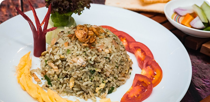
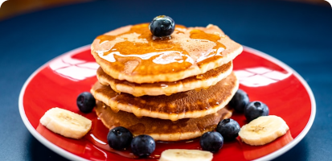
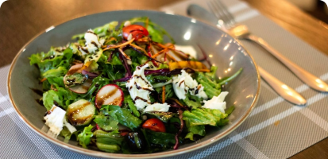

Nasi goreng tradisional dengan bumbu rumahan, terasi pedas, dan kerupuk renyah.

Pellentesque at volutpat arcu. Vivamus ornare eros non ante tincidunt, eu commodo nibh ornare.

Salad tradisional dengan bumbu rumahan, terasi pedas, dan kerupuk renyah.